家の熱モデル
このデモでは、Simulink® を使用して家の熱モデルを作成する方法を示します。このシステムでは、屋外環境、家の熱特性、および家の暖房システムがモデル化されます。
sldemo_househeat_data.m ファイルでは、モデル ワークスペースのデータが初期化されます。変更するには、モデル ワークスペースを直接編集するか、ファイルを編集してモデル ワークスペースを再度読み込みます。モデル ワークスペースを表示するには、Simulink エディターから [表示] > [モデル エクスプローラー] を選択します。
目次
モデルを開く
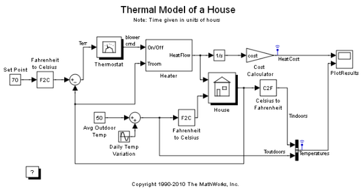図 1: 家の暖房モデル
モデルの初期化
このモデルでは、一般的な家の暖房コストが計算されます。モデルを開くと、家に関する情報が sldemo_househeat_data.m ファイルから読み込まれます。このファイルは以下の操作を行います。
- 家の形状 (大きさ、窓の数) の定義
- 建材の熱特性の指定
- 家の熱抵抗の計算
- ヒーターの特性 (温風の温度、流量) の指定
- 電気代の定義 (0.09 $/kWhr)
- 初期室温 (摂氏 20 度 = 華氏 68 度) の指定
- メモ: 時間は時 (hour) 単位で指定されます。特定の数量、たとえば空気の流量などは、1 時間あたり (1 秒あたりではなく) の数量で表されます
モデルのコンポーネント
Set Point
"Set Point" は Constant ブロックです。室内で保たれなければならない温度が指定されます。既定値は華氏 70 度です。温度は華氏で指定されますが、計算のために摂氏に変換されます。
Thermostat
"Thermostat" は、Relay ブロックを含んだサブシステムです。望ましい室温の上下 5 度 (華氏) 以内の変動が許容されます。気温が華氏 65 度を下回ると、ヒーターのスイッチが入ります。以下の Thermostat サブシステムを参照してください。
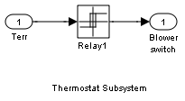図 2: "Thermostat" サブシステム
Heater
"Heater" は、一定の空気流量 "Mdot" をとるサブシステムです。"Mdot" は、sldemo_househeat_data.m ファイルで指定されます。サーモスタットからの信号によって、ヒーターのスイッチは入ったり切れたりします。ヒーターのスイッチが入っている場合は、温度 THeater (既定値は摂氏 50 度 = 華氏 122 度) の温風が一定流量 Mdot (既定値は 1kg/ 秒 = 3600kg/ 時) ヒーターから送り出されます。室内への熱流量は方程式 1 で表されます。
方程式 1
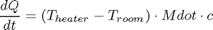
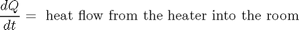
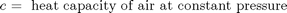
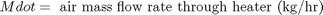
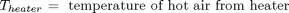

図 3: Heater サブシステム
Cost Calculator
"Cost Calculator" は Gain ブロックです。"Cost Calculator" により、経時変化する熱流量が積分され、エネルギー コストに乗算されます。暖房コストは "PlotResults" スコープにプロットされます。
House
"House" は、室温の変動が計算されるサブシステムです。ヒーターからの熱流量と屋外環境への放熱量が考慮されます。放熱量と温度の時間微係数は、方程式 2 で表されます。
方程式 2
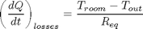
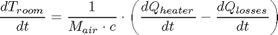
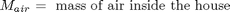
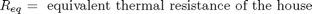
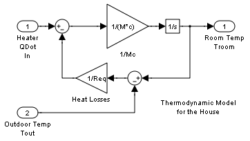図 4: House サブシステム
屋外環境のモデル化
屋外環境は、熱容量が無限で温度 Tout が経時的に変化するヒート シンクとしてモデル化します。Constant ブロック "Avg Outdoor Temp" は、屋外の平均気温として指定されます。"Daily Temp Variation" Sine Wave ブロックにより、屋外温度の毎日の変動が生成されます。これらのパラメーターをさまざまな値に変更し、暖房コストへの影響を調べてください。
シミュレーションの実行と結果の可視化
シミュレーションを実行し、結果を可視化します。"PlotResults" スコープを開いて結果を可視化します。暖房コスト、室温、および屋外の気温がスコープにプロットされます。屋外の気温が正弦関数的に変動しているのに対して、室温は "Set Point" の上下 5 度 (華氏) 以内に保たれています。時間軸の単位は時 (hour) です。
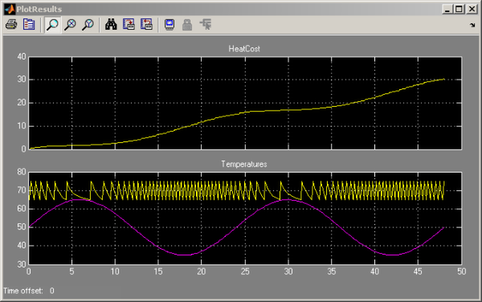図 5: シミュレーション結果 (時間軸の単位は時 (hour) )
このモデルによれば、この家の 2 日間の暖房コストは約 $30 です。これらのパラメーターをさまざまな値に変更し、システム応答を観察してみてください。
注意
このモデルは暖房コストを計算する目的にのみ設計されています。屋外の気温が室温よりも高い場合、室温は、望ましい "Set Point" を超えます。
このモデルを変更してエアコンを組み込むことができます。エアコンは、ヒーターを変更したものとして実装できます。これを行うには、以下のようなパラメーターを sldemo_househeat_data.m に追加します。
- 冷風出力
- エアコンからの気流の温度
- エアコンの効率
サーモスタットを変更し、エアコンとヒーターの両方が制御されるようにする必要もあります。